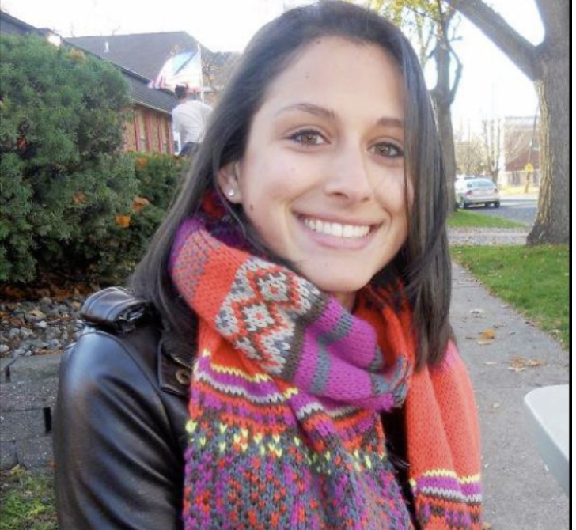

Julia Marie Janes
Julia's favorite inspirational quote — "You never know how strong you are until being strong is the only choice you have."
During her sophomore year in high school, Julia was diagnosed with Ewing sarcoma, a rare but deadly bone cancer. She endured a year of harsh treatments and serious health complications. But she was declared cancer free and graduated from high school with honors. While on winter break during her sophomore year in college, Julia was diagnosed with AML, a secondary cancer resulting from her treatments for Ewing. Despite several stem cell transplants, chemo, and even dialysis due to kidney failure, Julia passed away at the age of 20 in November 2013. This Hero Fund honors her last wish: no child should endure what she did, and it supports pediatric cancer research, particularly for the AYA population.
I am very honored to be supported by Julia's Legacy of Hope, a St. Baldrick's Hero Fund from Year 2024 to present. You can learn more about Julia here.
